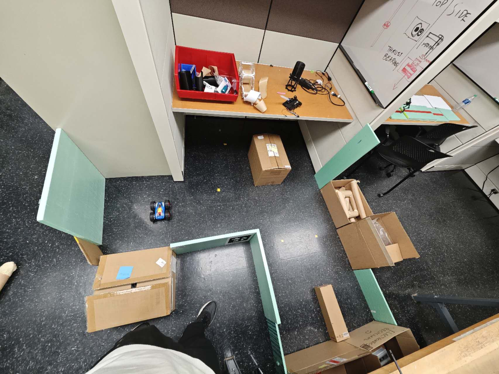
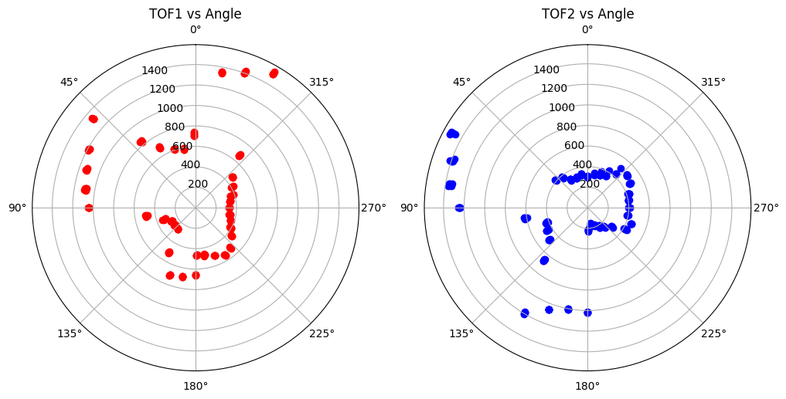
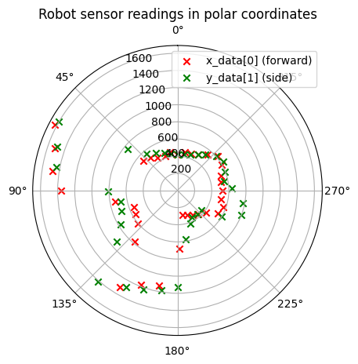
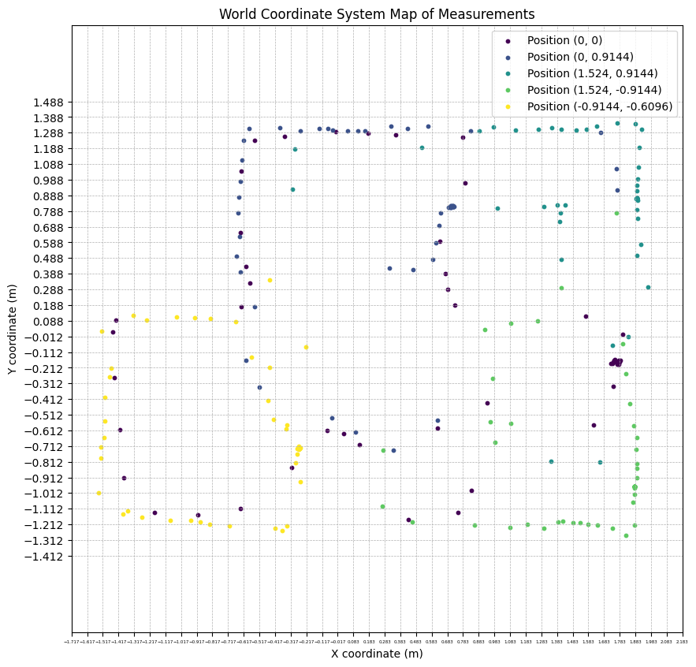
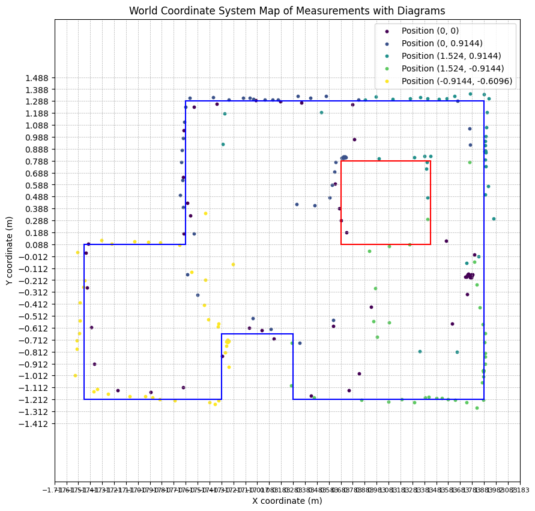

Control
Because the tof would report an error output if it was taking a reading when its distance from the object varied too much, I chose to use method two, Orientation control. In this method, I used a PID controller to control the robot to rotate 10 degrees and then come to a standstill, then measured the data 10 times using sensors mounted on the front and left side of the robot, and repeated 36 times.
ToF Data Collection
The program controls the ToF sensor to collect data 10 times while the robot is stationary at an angle and stores them in an array as struct 'DataPointTOF'. The 'dataPointTOF' contains the readings of tof1, the readings of tof2, the current angle, and the timestamp. The final array will be sent to the computer via BLE. My python script then splits the received array into tof1 and tof2 based on the current angle, then remove the maximum and minimum values of each tof reading at the same angle and average the remaining values to form the final array: [(tof1_average, tof2_average, current_yaw), ...]. The tof1 represents the reading of the tof mounted on the left panel of the robot and the tof2 represents the reading of the tof mounted on the front panel of the robot.
Code
I use two commands: set_pid_imu and rotate_a_circle. The set_pid_imu allows me to easily adjust the parameters of the pid controller, and the length of time for each rotation of 10 degrees to be performed. The rotate_a_circle controls the behavior of the robot as it starts to rotate 36 times through 10 degrees and collects tof readings, and returns the collected tof data via Bluetooth.
Continuous Rotate Demo
The following video demonstrates my implementation of controlling the car to rotate 360 degerees and to collect data using the above code.
Tof Data Demo
Merge Data and Plot
Since I didn't have enough time to use the test environment in the lab, I set up the test environment shown below in another room, along with a 3d model measured and built using a Bosch laser rangefinder as ground truth.
The data plots collected through the method described in the ToF data colloection above are as follows, figure 3 is the raw data and figure 4 is the averaged data.
Since there is a distance between the tof sensors and the center/axis origin of the robot, I need to use a homogeneous transformation matrix to process the data collected by the tof. According to the measurements, tof2 (front tof) is 9 cm from the center of the robot, and tof1 (left tof) is 4 cm from the center of the robot and is rotated 90 degrees counter-clockwise by the z-axis of the robot's coordinate system. So I did following to each tof1 and tof2:
With the transformed data, I plotted them on polar coordinates. The red x's are from tof2, the green x's are from tof1.
I controlled the robot to rotate again in the same position and the collected data was displayed on the same plot in a different color.
PLOT
The next polar plots show data collected by controlling the robot to rotate at six designated points in a static room in the lab.
Since I know the coordinates and distances of the specified points, I converted the robot coordinate system to the world coordinate system and plot.
Line-Based Map
Based on the above plot, I drawn the following lines representing the obstacles and boundaries of the environment.
